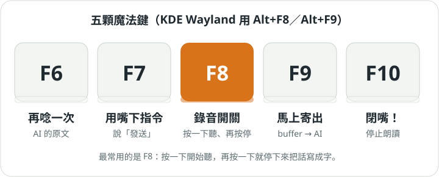
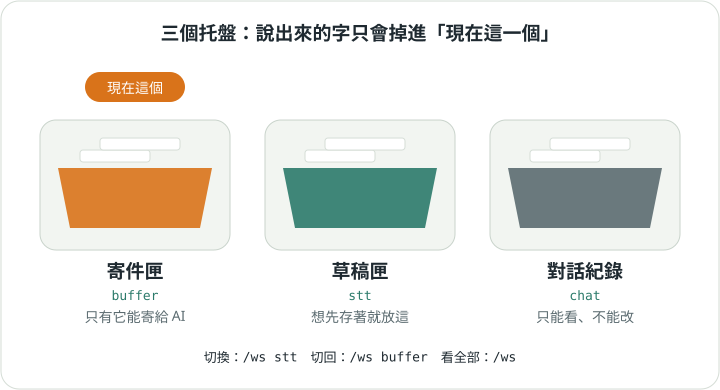

第 02 章
說話變文字
按一下 F8 說話，再按一下，話就變成字，放進托盤裡。

F8：錄音開關
按一下開始聽，再按一下停下來寫字。看看狀態列怎麼變：
按按看：待機 → 錄音中 → 處理中 → 待機
小提醒 KDE Plasma 的 Wayland 桌面要按 Alt+F8、Alt+F9。Wayland 不讓一般程式聽整個鍵盤，所以改由 KDE 快捷鍵轉告。
不想說話？直接在輸入框打字按 Enter，效果一樣。開頭是 / 的才算指令。
三個托盤

- buffer 寄件匣：開機就用它，只有它能寄給 AI。
- stt 草稿匣：想先存著的話放這。
- chat 對話紀錄：你和 AI 說過的話，只能看。
切換用 /ws stt、/ws buffer；整理用 /show、/del 2、/to_top 3、/concat、/clear。